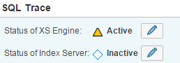

The SQL trace collects information about all SQL statements executed on the XS Engine and saves it in a trace file for further analysis. It is inactive by default.
Information collected by the SQL trace includes overall execution time of each statement, the number of records affected, potential errors (for example, unique constraint violations) that were reported, the database connection being used, and so on. So the SQL trace is a good starting point for understanding executed statements and their potential effect on the overall application and system performance, as well as for identifying potential performance bottlenecks at statement level.
You can view SQL trace files under the SQL Trace node in the Trace Files tree on the left of the Trace screen.
You activate and configure the SQL trace in the SQL Trace section on the Trace Configuration tab. Since the SAP HANA Web-based Development Workbench runs on the XS Engine, you need to enable the SQL trace specifically for the XS Engine:
